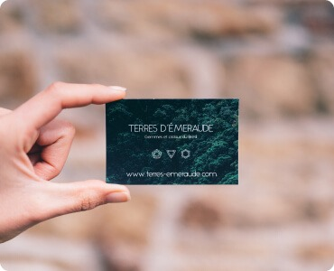
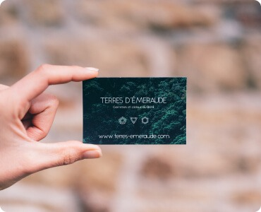
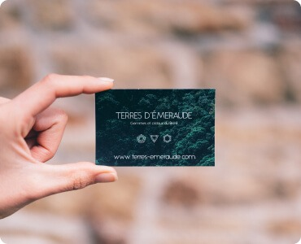

Контентні зображення
Контентні зображення зазвичай бувають у форматі jpg,png тобто растрові ,котрі необхідно стиснути та переробити на формат webp
 

В даному випадку всі елементи в форматі svg але буває і в форматі jpg,png котрі треба конвертувати в webp
Контентні зображення зазвичай бувають у форматі jpg,png тобто растрові ,котрі необхідно стиснути та переробити на формат webp
